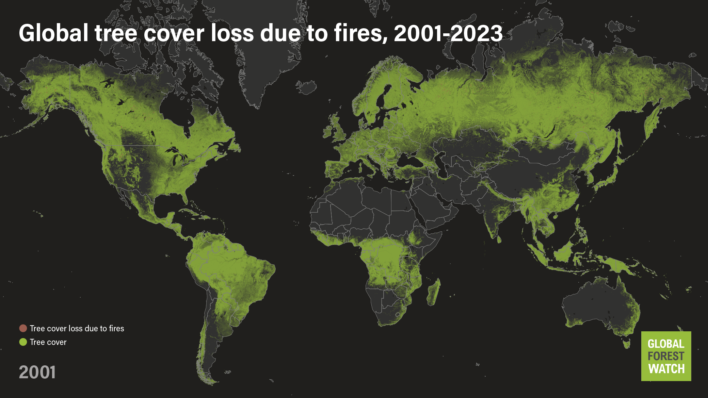

The latest data on forest fires confirms what we've long feared: Forest fires are becoming more widespread, burning at least twice as much tree cover today as they did two decades ago. Using data from researchers at the University of Maryland, recently updated to cover the years 2001 to 2023, we calculated that the area burned by forest fires increased by about 5.4% per year over that time period. Forest fires now result in nearly 6 million more hectares of tree cover loss per year than they did in 2001 — an area roughly the size of Croatia
Fire is also making up a larger share of global tree cover loss compared to other drivers like mining and forestry. While fires only accounted for about 20% of all tree cover loss in 2001, they now account for roughly 33%.
